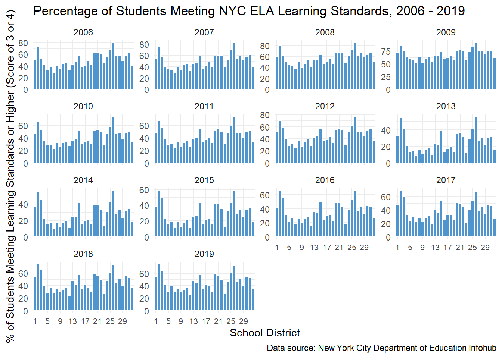
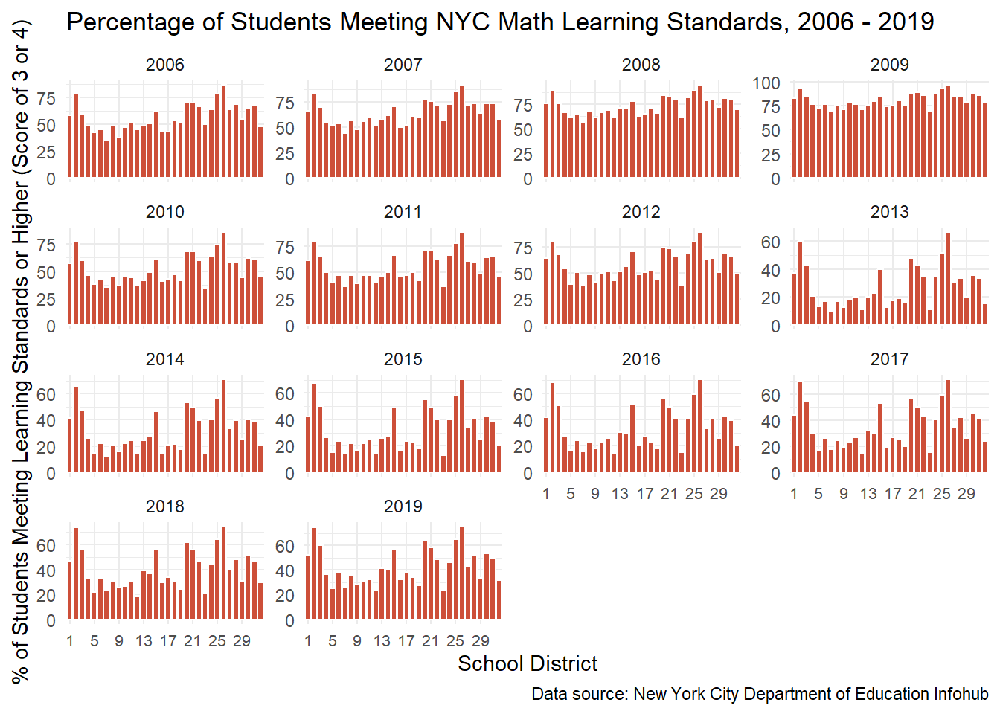
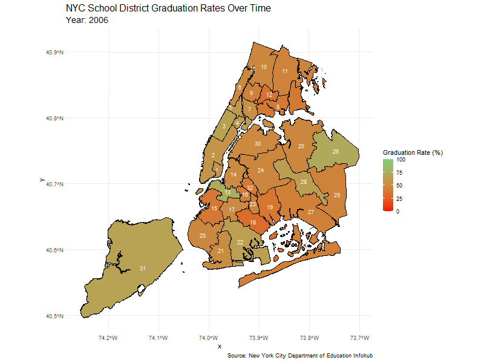
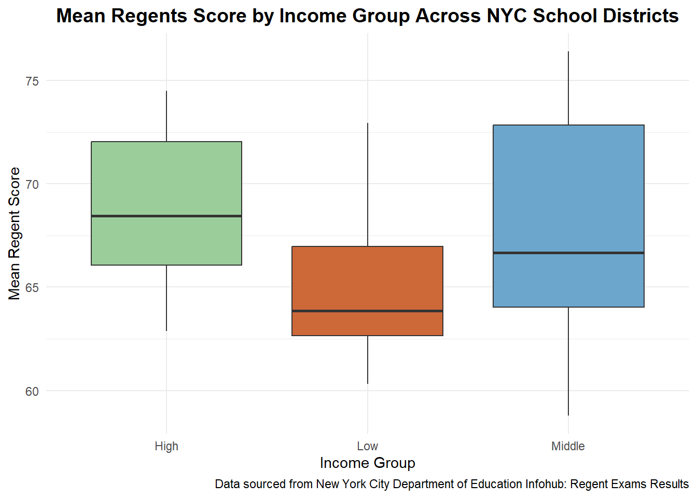
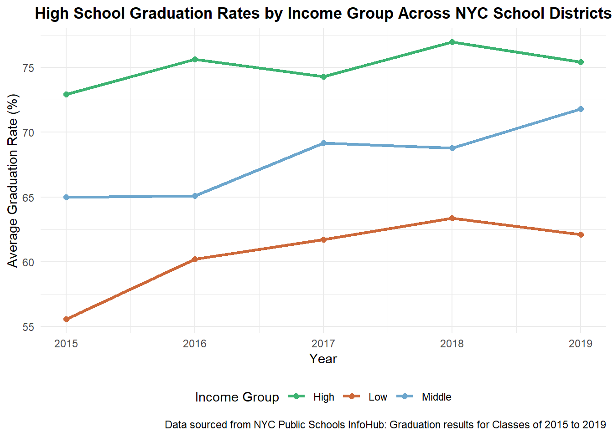
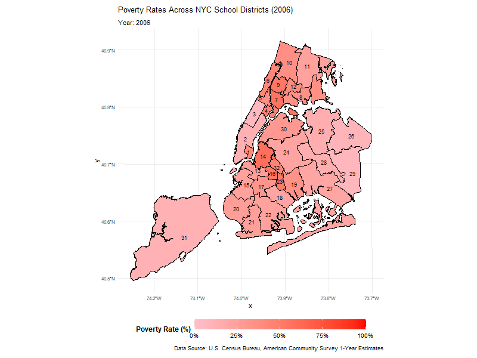
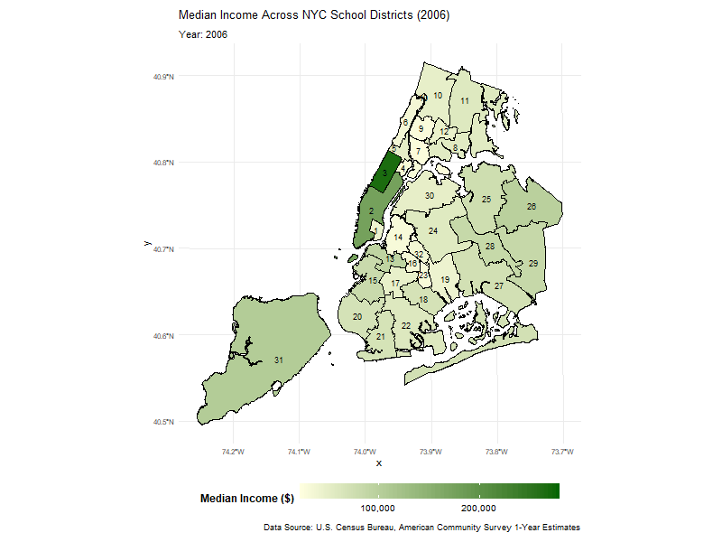
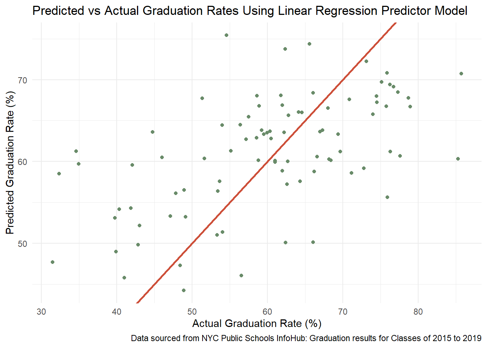

The Impact of Socioeconomic Factors on New York City’s Public School Districts in Student’s Education
Fatima W. | 12/12/2024
Nov 23, 2020 Homework Hub in Chinatown, supporting NYC Students. Photo provided by Street Lab.
Introduction
With nearly 1 million enrolled students across over 1,800 public schools, New York City remains the largest public school system within the US. Managed by the NYC Department of Education (DOE), the system runs multiple public schools, charter schools, and specialized institutions to support students with specialized needs and/or unique talents. The city’s diverse population comes with varying levels of income and poverty, and a wide spectrum of cultural/ethnic and social backgrounds.
Meanwhile, NYC public schools continue to face challenges regarding student academic excellence and educational inequities. If we take a look at previous literature in research, findings show present education gaps by gender across the US, as well as incorporating better student-to-teacher ratios can improve educational outcomes. In addition, many studies have been performed where findings show the impact of socioeconomic factors on a student’s academic performance. Research done by the National Library of Medicine explains how poverty and income may contribute to students’ poor educational outcomes.
This brings us to the purpose of this analysis. While we understand that significant research shows financial and demographic inequalities having an impact, our analysis intends to dive deeper into figuring out which selection of factors, and to what extent, impact NYC’s students. In this section, we’ll go over how socioeconomic factors play into NYC’s students’ academic performance, specifically on the school district level. Analyses have also been formed on student demographics, school characteristics, and school funding which can be accessed through these hyperlinks, as well as the end of the report.
Gathering the Data
We’ll be using a variety of datasets obtained from the NYC DOE Infohub, which is the official website containing historic data of student academics specifically in the five boroughs. More specifically, we’ll take a look at the English Language Arts and Math State Tests, Regent scores, and high school graduation rates roughly over the last 15 years.
Each year, students in grades three through eight are required to participate in the ELA and Math end-of-year state assessments. These exams are scored on a level of 1 to 4, where:
1 = Not Meeting Learning Standards
2 = Partially Meeting Learning Standards
3 = Meeting Learning Standards
4 = Meeting Learning Standards with Distinction
It’s also crucial to note that due to the COVID-19 pandemic, exams were not administered in 2020, and were optional for students to take in 2021. For these reasons, exam score data is not available during these years. Because our focus is at the school district level, we’ll be sure to extract data accordingly.
Click to view code
required_libraries <-c("readr", "tidyr", "dplyr", "ggplot2", "stringr","sf", "reshape2", "corrplot", "gganimate", "gifski", "RColorBrewer", "ggrepel", "readxl","gt", "caret", "Metrics", "car")for (pkg in required_libraries) {if (!requireNamespace(pkg, quietly =TRUE)) {install.packages(pkg) }library(pkg, character.only =TRUE)}#**** ELA *****# SWE ELA: Function to Get City of New York Data Files from cityofnewyork URLget_cony_file <-function(fname, zname, FILE_URL) {if(!file.exists(fname)){if(!file.exists(zname)){ download.file(FILE_URL, destfile = zname) } td <-tempdir(); zip_contents <-unzip(zname, exdir = td) file_path <-file.path(td, fname) }as.data.frame(read.csv(file_path))}# ELA 2006-2012ELA_URL_2006 <-"https://data.cityofnewyork.us/api/views/9uqq-k6t8/files/6cb21873-4c19-42ab-aa31-13573b47ed45?download=true&filename=2006-2012%20ELA%20Test%20Results.zip"ELA_2006 <-"2006-2012_ELA_Test_Results.zip"ela_2006_12 <-get_cony_file("2006-2012_English_Language_Arts__ELA__Test_Results_-_District_-_All_Students.csv", ELA_2006, ELA_URL_2006)# ELA 2013-2019ELA_URL_2013_19 <-"https://data.cityofnewyork.us/api/views/iebs-5yhr/files/a6ff1ea4-4895-4372-a2d6-bbd0b17e89a4?download=true&filename=2013-2019%20ELA%20Test%20Results.zip"ELA_2013_19 <-"2013-2019_ELA_Test_Results.zip"ela_2013_19 <-get_cony_file("2013-2019_English_Language_Arts__ELA__Test_Results_District_-_All_SWD_Ethnicity_Gender_Economic_Status_ELL.csv", ELA_2013_19, ELA_URL_2013_19)#***** MATH ******# SWE Math 2006-2012if (!file.exists("2006-2012_Math_Test_Results.zip")) { FILE_URL <-"https://data.cityofnewyork.us/api/views/e5c5-ieuv/files/93fd3270-8d2e-47ac-878d-04d96e411168?download=true&filename=2006-2012%20Math%20Test%20Results.zip"download.file(FILE_URL, destfile ="2006-2012_Math_Test_Results.zip")}zip_file <-"2006-2012_Math_Test_Results.zip"temp_dir <-tempdir()unzip(zip_file, exdir = temp_dir)file_path <-file.path(temp_dir, "2006-2012 Math Test Results", "2006_-_2012__Math_Test_Results_-_District_-_All_Students.csv")math_2006_12 <-read.csv(file_path)# Math 2013-2023# Check if the CSV file existsif (!file.exists("2013-2023_Math_Test_Results__Excel_files.zip")) { FILE_URL <-"https://data.cityofnewyork.us/api/views/74kb-55u9/files/ca3b8584-9b64-472c-ace4-683e795c12e2?download=true&filename=2013-2023%20Math%20Test%20Results%20(Excel%20files).zip"download.file(FILE_URL, destfile ="2013-2023_Math_Test_Results__Excel_files.zip")}temp <-tempdir()zip_contents <-unzip("2013-2023_Math_Test_Results__Excel_files.zip", exdir = temp)file_path <-file.path(temp, "03_district-math-results-2013-2023-(public).xlsx")math_2013_23 <-read_excel(file_path, sheet ="All")
As for Regent exams, high school students, and some middle school students, must take Regents exams on a variety of subjects. Subjects include English, Algebra I, Living Environment (Biology), Geometry, Chemistry, Algebra II (Trigonometry), Physics, and Language Other Than English (LOTE). Middle school students are offered to take certain Regent exams in the 8th grade, however this determination is based on whether the middle school has an accelerated Honors program (one would find out which middle schools offer such programs here by registering their child for school enrollment). The passing score for any Regent exam is currently a 65 or higher. This threshold has been the criteria throughout all years of our analysis. Along with Regent scores, we’ll use graduation rates as another determination of students’ academic performance.
Click to view code
#***** REGENTS ******dest_file <-"2014-15-to-2022-23-nyc-regents-overall-and-by-category---public.xlsx"regent_url <-"https://infohub.nyced.org/docs/default-source/default-document-library/2014-15-to-2022-23-nyc-regents-overall-and-by-category---public.xlsx"# check if the file already existsif (!file.exists(dest_file)) {download.file(regent_url, destfile = dest_file, mode ="wb")}# Read the "All Students" sheet from the downloaded Excel fileregent_data <-read_excel(dest_file, sheet ="All Students")#***** GRADUATION RATES ******grad_file <-"2023-graduation-rates-public-district.xlsx"grad_url <-"https://infohub.nyced.org/docs/default-source/default-document-library/2023-graduation-rates-public-district.xlsx"if (!file.exists(grad_file)) {download.file(grad_url, destfile = grad_file, mode ="wb")}grad_data <-read_excel(grad_file, sheet ="All")grad_file2 <-"2001-2011-graduation_rates_public_district.xlsx"grad_url2 <-"https://infohub.nyced.org/docs/default-source/default-document-library/2001-2011-graduation_rates_public_district.xlsx"if (!file.exists(grad_file2)) {download.file(grad_url2, destfile = grad_file2, mode ="wb")}grad_data2 <-read_excel(grad_file2, sheet ="All")
Next, we’ll obtain several datasets that originated from the United Census Bureau; this data is provided by Keeping Track Online CCC, which is known for their vision of publishing cleaned data on children and family well-being in New York city, made available for research and data analysis. We’ll focus on the most important factors that we hypothesize will have an impact on educational outcomes, that is, median household income,poverty rates, educational attainment rates, NYS SNAP Benefit rates, and employment population rates. Lastly, we’ll also use New York City shapefiles that contain the coordinates of school districts. This will be helpful later on in visualizing changes across school districts.
Before we can begin our exploratory analysis, we have to ensure the integrity of our datasets. Data on State Wide Exam scores is provided for years 2006 through 2019, whereas Regents Exam scores are available from 2015 to 2023. Similarly, years of data in our socioeconomic datasets run from 2006 to 2019. For these reasons, our years of focus will be from 2006 to 2019 across all datasets. However, you will see further in our analysis how we will try to predict more recent scores of Regents Exams (years 2022/23) using historical data and factors we found to have significant impact. With that said, we’ll ensure to combine all appropriate datasets and tidy up our work environment once we have all the data we need.
One very important thing to note is the difference between school districts and community districts. You may have noticed that all of our socioeconomic data is provided at the community district level; there are currently 59 community districts. But as we’ve mentioned earlier, our focus is on school districts (32 in total). This means that there are multiple community districts within each school district. Trying to figure out how we can assign the school districts given the community district names/codes was one of the main issues at hand. Unfortunately, there aren’t any online databases that provide school districts with community names. To solve this issue, we created a dataframe that maps community district names with school district codes, which we then join with our socioeconomic data to assign the school district codes appropriately. While this may have seemed like a time-consuming process, we felt like we were spinning our wheels trying to scrape the web for this info. At that point, manually creating this dataframe had taken us less time than scraping the web, and overall it was sufficient in organizing our data. Once we ensured the structure of our datasets and merged them accordingly, we also made sure to include only districts (i.e. rows of data regarding boroughs as a whole were removed) and updated the data to include the mean of our socioeconomic values grouped by school district and year. Now it may seem a bit confusing at this point in trying to keep track of all our datasets, so below is a summary of our cleaned data:
Exploring the Data: How might these socioeconomic factors impact students’ academic achievements?
State Wide Exams: ELA & Math
We’ll first take a look at the ELA and Math State Wide Exam scores. To clarify, there are two ways we can look at the distribution of these scores: mean scale score or the breakdown percentage of students receiving a level of 1 through 4. The mean scale score is an average of all students tested, which according to the New York State Education Department, is calculated using a complex process of several factors. Because we mainly care about how well students are performing, we’ll take a look at students who are meeting learning standards with or without distinction (in other words, students scoring 3 or higher).
Click to view code
# First we'll calculate the combined percentage of Level 3 and Level 4 for each district and year for ELAela_studentspassing <- ela_data |>group_by(year, school_district) |>summarize(passing =sum(elevel3 + elevel4, na.rm =TRUE)) |>ungroup()ela_plot <-ggplot(ela_studentspassing, aes(x =factor(school_district), y = passing)) +geom_bar(stat ="identity", fill ="steelblue3", color ="white") +facet_wrap(~ year, scales ="free_y") +scale_x_discrete(breaks =function(x) x[seq(1, length(x), by =4)]) +labs(title ="Percentage of Students Meeting NYC ELA Learning Standards, 2006 - 2019",x ="School District",y ="% of Students Meeting Learning Standards or Higher (Score of 3 or 4)",caption ="Data source: New York City Department of Education Infohub") +theme_minimal() +theme(axis.text.x =element_text(size =8)); ela_plot

Click to view code
# Repeat for Mathmath_studentspassing <- math_data |>group_by(year, school_district) |>summarize(passing =sum(mlevel3 + mlevel4, na.rm =TRUE)) |>ungroup()math_plot <-ggplot(math_studentspassing, aes(x =factor(school_district), y = passing)) +geom_bar(stat ="identity", fill ="tomato3", color ="white") +facet_wrap(~ year, scales ="free_y") +scale_x_discrete(breaks =function(x) x[seq(1, length(x), by =4)]) +labs(title ="Percentage of Students Meeting NYC Math Learning Standards, 2006 - 2019",x ="School District",y ="% of Students Meeting Learning Standards or Higher (Score of 3 or 4)",caption ="Data source: New York City Department of Education Infohub") +theme_minimal() +theme(axis.text.x =element_text(size =8)); math_plot

We can see above the distribution of both ELA and Math scores across school districts through the years of 2006 to 2019. We can see percentages dip for roughly districts 4 through 13 in both ELA and Math from 2013 to 2017, and we can see schools in these districts slightly improve, but nonetheless, the percentage of students meeting the learning standards and beyond has since decreased from years in the late 2000s. It should also be a reminder that these percentages are based on all students in each school district, meaning it’s a accumulation of students across all grades and all public schools. As someone who has attended a NYC public school during these years, I recall teachers mentioning there were new learning standards set by New York State. As it turns out, there were changes made; according to the New York State Education Department, proficiency was based on the Common Core, which they defined as a more “demanding set of knowledge and skills necessary for 21st century college and careers.” On a personal level, I do remember the curriculum in these subjects becoming increasingly difficult as I went through elementary and middle school. Though it is not certain, it is possible that the change in learning standards may have impacted the performance of students that took the State Wide Exams.
Regents Exams
We can also take a look at the mean Regents scores for the years 2015 to 2019 below. Students are required to pass five Regents exams with a score of at least 65 out of 100 (which is the lowest passing grade) in order to graduate high school, but it can’t be just any exam. Of these five exams, it must include:
English Language Arts (ELA)
One math Regents exam (Algebra I, Geometry, or Algebra II/Trigonometry)
One social studies Regents exam (Global or U.S. History)
One science Regents exam (Earth Science, Living Environment/Biology, Chemistry, or Physics)
One additional Regents exam or other assessment
The mean Regent scoring we’ve used to create the above visualization is actually an average of all Regents examinations administered across each district, regardless of the test subject or grade. We can see that in 2016, nearly half the school districts had mean Regents scores that were not passing, which may make us wonder about the possibility of Regents examinations being more difficult during this year compared to other years. This may be unlikely however, considering that Regents have been administered since 1865 and while there have been changes since that time, there hasn’t been many policy changes to these exams in the periods we’re analyzing. Because Regents examinations are required for students to take in order to graduate, it’s concerning when students in these school districts aren’t passing. In fact, research has shown that these exit exams may contribute to the increase in high school dropout rates, and that these exams aren’t necessarily better in preparing students for life after high school. We may view which school districts below have failed the Regents exams by each year below, and we can actually see how each district’s graduation rates have changed over time.
Click to view code
# First we'll assign each district in each year a level of passing or failing, then summarizeregent_summary <- regent_data |>mutate(Result =ifelse(regent_mean_score >=65, "Passing", "Failing")) |>group_by(year, Result) |>summarize(count =n(), .groups ='drop')regent_plot <-ggplot(regent_summary, aes(x = Result, y = count, fill = Result)) +geom_bar(stat ="identity", color ="white") +facet_wrap(~ year, scales ="free_y") +scale_fill_manual(values =c("Passing"="darkseagreen4", "Failing"="tomato")) +labs(title ="Number of School Districts Passing and Failing the Regents, 2015 - 2019",x ="Regent Result",y ="Number of Districts",caption ="Data source: New York City Department of Education Infohub") +theme_minimal() +theme(axis.text.x =element_text(size =8), legend.position ="none"); regent_plot
# Now we take a look at graduation rates using shape files. # Merge the shapefile data with graduation ratesnyc_grad_map <- nyc_sf |>left_join(grad_rates, by ="school_district")# Create the animated plotgrad_plot <-ggplot(nyc_grad_map) +geom_sf(aes(fill = grad_perc, geometry = geometry), color ="black", size =0.1) +geom_sf_text(data = nyc_sf, aes(geometry = geometry, label = school_district), size =3, color ="white") +scale_fill_gradient(name ="Graduation Rate (%)",low ="red2", high ="palegreen3", limits =c(0, 100), ) +labs(title ="NYC School District Graduation Rates Over Time",subtitle ="Year: {closest_state}",caption ="Source: New York City Department of Education Infohub") +theme_minimal() +theme(plot.title =element_text(size =16, face ="bold"),plot.subtitle =element_text(size =14),legend.position ="right") +transition_states(year, transition_length =1, state_length =0.5) +ease_aes('linear')# Render the animation by saving it as a gif# animate(grad_plot, fps = 10, width = 800, height = 600, renderer = gifski_renderer("nyc_grad_rates.gif"))

We can see that many of these districts have started out with low graduation rates (red shade) at the beginning of our time frame, that is, 2006. However as time progresses, we may also point out that a few of these districts are slower in improving their graduation rates relative to other school districts. For example, take a look at the shades of school districts 8, 12, 16, and 23, just to name a few.
How do our socioeconomic variables correlate to each student academic metric?
Next we’ll take a look at how factors like median income, educational attainment, poverty rates, SNAP rates, and employment rates correlate to ELA and Math State Wide Exams. You’ll notice there are certain variables such as MSS, which is an abbreviation of Mean Scale Score, and L1 through L4, which are the score breakdowns of the subject. Stronger shades of green indicate stronger positive correlations, whereas stronger shades of red indicate stronger negative correlations. There isn’t too great of a difference in correlation coefficients when comparing the results of ELA versus Math scores. We may point out, however, that students scoring a level 1 or 2 tend to correlate with districts with increased SNAP rates and decreased employment rates and Bachelor’s or higher rates. Similarly, students who scored a level 4 tend to correlate with districts where there are higher median incomes per household, higher rates of employment, and lower rates of poverty and SNAP rates.
Click to view code
ela_cor <- ela_data[, !(names(ela_data) %in%c("year", "school_district"))]cor_matrix <-cor(ela_cor, use ="pairwise.complete.obs")# Fix the variable names in the plotcolnames(cor_matrix) <-c("MSS", "L1", "L2", "L3", "L4", "< HS", "HS", "Some College", "Associates", "Bachelor+", "Employment Ratio", "Median Income", "Poverty", "SNAP")rownames(cor_matrix) <-colnames(cor_matrix)corrplot( cor_matrix, method ="circle",type ="full",tl.cex =0.8,tl.col ="black",addCoef.col ="black",number.cex =0.5,col =colorRampPalette(c("tomato3", "white", "darkseagreen4"))(200),cl.pos ="r",cl.cex =0.8,diag =TRUE,title ="Correlation of ELA Scores & Socioeconomic Factors",mar =c(0, 0, 1, 0))
If we take a look at how these same factors correlate with high school students’ graduation rates and Regents scoring, we notice that it’s not unsimilar. In fact, the correlations are slightly higher for high schoolers when looking at how graduation rates correlate to employment rates, median income, and educational attainment. This may suggest that these factors may have a larger impact on students’ education as they grow older, as opposed to grades earned in earlier years of schooling. This reasoning may make sense as responsibilities (i.e. financial) increase as students grow older.
What patterns appear when comparing academic performance across schools in wealthier and lower-income neighborhoods?
We want to take a closer look at high school students in determining how performance may differ across wealthy and lower income school districts given our correlation visualization. We also feel that their performance during this period is more significant because most students are working towards higher education after high school, such as an associates or bachelor’s degree. Using median income, we’ll categorize each school district as low, middle, or high income groups and see what trends appear.
Click to view code
# Given our median income data, we'll categorize neighborhoods into different income classes# Low-income earners will be below the 25th percentile, Middle-income earners will be between # 25th and 75th percentiles, and High-income earners will be above the 75th percentile.# Regentsregent_income <- regent_data |>mutate(income_group =case_when( median_income <quantile(median_income, 0.25, na.rm =TRUE) ~"Low", median_income >=quantile(median_income, 0.25, na.rm =TRUE) & median_income <=quantile(median_income, 0.75, na.rm =TRUE) ~"Middle", median_income >quantile(median_income, 0.75, na.rm =TRUE) ~"High"))regent_aggregated <- regent_income |>group_by(year, income_group) |>summarize(avg_grad_rate =mean(grad_perc, na.rm =TRUE),.groups ="drop")regent_summary <- regent_income |>group_by(income_group) |>summarize(mean_regent_score =mean(regent_mean_score, na.rm =TRUE), grad_rate =mean(grad_perc, na.rm =TRUE))regent_summary <- regent_summary |>drop_na(income_group)regent_income <- regent_income |>drop_na(income_group)regent_incomeplot <-ggplot(regent_income, aes(x = income_group, y = regent_mean_score, fill = income_group)) +geom_boxplot() +labs(title ="Mean Regents Score by Income Group Across NYC School Districts",x ="Income Group", y ="Mean Regent Score",caption ="Data sourced from New York City Department of Education Infohub: Regent Exams Results") +scale_fill_manual(values =c("Low"="sienna3", "Middle"="skyblue3", "High"="darkseagreen3")) +theme_minimal() +theme(legend.position ="none",plot.title =element_text(hjust =0.5, face ="bold", size =14)); regent_incomeplot

Click to view code
regent_income_grad <-ggplot(regent_aggregated, aes(x = year, y = avg_grad_rate, color = income_group, group = income_group)) +geom_line(linewidth =1.2) +geom_point(size =2) +scale_color_manual(values =c("Low"="sienna3", "Middle"="skyblue3", "High"="mediumseagreen"),name ="Income Group") +labs(title ="High School Graduation Rates by Income Group Across NYC School Districts",x ="Year",y ="Average Graduation Rate (%)",caption ="Data sourced from NYC Public Schools InfoHub: Graduation results for Classes of 2015 to 2019") +theme_minimal() +theme(legend.position ="bottom",plot.title =element_text(hjust =0.5, face ="bold")); regent_income_grad

We can see on average, school districts with lower income have performed poorly on Regents Exams on average relative to higher income districts. Not only this, but lower income districts also had the lowest graduation rates during these years compared to middle and higher income districts. This finding was expected as we’ve mentioned earlier that passing Regents examinations are required to graduate. Although it appears that graduation rates on average have been slowly increasing over this time period, any board of education (and the general public) would want to see more ideal rates. To give further perspective of how median incomes and poverty rates have changed over time, we’ve animated the below plots.
Click to view code
animation_data <- nyc_sf |>left_join(combined_factors, by ="school_district")poverty_map <-ggplot(animation_data) +geom_sf(aes(geometry = geometry, fill = poverty_perc), color ="black", size =0.1) +geom_sf_text(data = nyc_sf, aes(geometry = geometry, label = school_district), size =3, color ="black") +scale_fill_gradient(name ="Poverty Rate (%)", low ="pink", high ="red",limits =c(0, 1),labels = scales::percent_format(accuracy =1)) +labs(title ="Poverty Rates Across NYC School Districts ({frame_time})",subtitle ="Year: {frame_time}",caption ="Data Source: U.S. Census Bureau, American Community Survey 1-Year Estimates") +theme_minimal() +theme(legend.position ="bottom",legend.title =element_text(size =12, face ="bold"),legend.text =element_text(size =10),axis.text =element_text(size =8),legend.key.width =unit(4, "lines"),plot.margin =margin(10, 10, 10, 10)) +transition_time(as.integer(year)) +ease_aes('linear')# animate(poverty_map, width = 800, height = 600, fps = 10, duration = 10)#### Median incomemedian_income_map <-ggplot(animation_data) +geom_sf(aes(geometry = geometry, fill = median_income), color ="black", size =0.1) +geom_sf_text(data = nyc_sf, aes(geometry = geometry, label = school_district), size =3, color ="black") +scale_fill_gradient(name ="Median Income ($)", low ="lightyellow", high ="darkgreen",limits =range(animation_data$median_income, na.rm =TRUE),labels = scales::comma_format(accuracy =1)) +labs(title ="Median Income Across NYC School Districts ({frame_time})",subtitle ="Year: {frame_time}",caption ="Data Source: U.S. Census Bureau, American Community Survey 1-Year Estimates") +theme_minimal() +theme(legend.position ="bottom",legend.title =element_text(size =12, face ="bold"),legend.text =element_text(size =10),axis.text =element_text(size =8),plot.margin =margin(10, 10, 10, 10),legend.key.width =unit(4, "lines")) +transition_time(as.integer(year)) +ease_aes('linear')# animate(median_income_map, width = 800, height = 600, fps = 10, duration = 10)
 
We can see poverty rates and median income has changed slightly over time, where in some districts, poverty has gone up, whereas in others, median income has increased.
Linear Regression t-Test & Creating a Predictor Model
At this point in our analysis, we want to see exactly which factors are statistically significant in determining graduation rates of school districts. We’ll perform a simple t-test to test our null hypothesis, that is, none of these predictor variables are significantly associated with graduation rates. Our alternative hypothesis will be the opposite, that those lower than our p-value threshold are significantly associated with graduation rates. Since many of our predictor variables have moderate to strong correlations with each other, for example, SNAP rates and poverty rates, we will test for multicollinearity by finding the VIF values (variance inflation factors) of our variables.
Click to view code
# Create the data we'll use to create our modelsmodel_data <- combined_factors |>inner_join(grad_rates, by =c("school_district", "year"))set.seed(1989)# Create a training and testing data sets. We'll use 80% of our data for training, and the remaining 20% for testing:train_division <-createDataPartition(model_data$grad_perc, p =0.8, list =FALSE)train_data <- model_data[train_division, ]test_data <- model_data[-train_division, ]# We'll first create a linear regression model with all our predictor variables, then check VIF values and remove those greater than 6model1 <-lm(grad_perc ~ less_hs + hs + some_college + associates + bachelors_higher + emp_ratio + median_income + poverty_perc, data = train_data)vif(model1)
Using 80% of our data as training data, and the remaining 20% for testing, our first model above is a linear regression model that includes all of our predictor variables, and we see there were quite a few variables having high VIF values greater than 5. To avoid issues of multicollinearity, we’ll remove those having a value greater than 5. That leaves us with our second model below with variables bachelor’s or higher, employment ratio, median income, and poverty rates. Checking again for multicollinearity, VIF values appear less than 5 which is a good sign.
Click to view code
# We can see that there's high VIF values for educational attainment, so we'll just stick # to one of these variables and create another modelmodel2 <-lm(grad_perc ~ bachelors_higher + emp_ratio + median_income + poverty_perc, data = train_data)vif(model2)
Summarizing the t-test results shown below, we may also point out that all of the variables in model 2 have a p-value less than the 0.01 threshold, except for employment ratio, which is still significant, but only under a p-value threshold of 0.05. This tells us that there is significant evidence that educational attainment, median income, and poverty rates are significantly associated with graduation rates.
Click to view code
summary(model2)
Call:
lm(formula = grad_perc ~ bachelors_higher + emp_ratio + median_income +
poverty_perc, data = train_data)
Residuals:
Min 1Q Median 3Q Max
-28.5975 -6.7788 0.3433 6.5178 27.8177
Coefficients:
Estimate Std. Error t value Pr(>|t|)
(Intercept) 6.919e+01 7.741e+00 8.938 < 2e-16 ***
bachelors_higher 5.822e+01 7.026e+00 8.286 2.42e-15 ***
emp_ratio -1.385e+01 1.391e+01 -0.995 0.32
median_income -1.280e-04 2.224e-05 -5.758 1.84e-08 ***
poverty_perc -3.616e+01 5.596e+00 -6.462 3.42e-10 ***
---
Signif. codes: 0 '***' 0.001 '**' 0.01 '*' 0.05 '.' 0.1 ' ' 1
Residual standard error: 9.266 on 355 degrees of freedom
Multiple R-squared: 0.3777, Adjusted R-squared: 0.3707
F-statistic: 53.87 on 4 and 355 DF, p-value: < 2.2e-16
Applying our testing dataset to our prediction model, we’ve also calculated the root mean squared error (RMSE), mean absolute error (MAE), and R-squared to evaluate how well our model performs.
Click to view code
# Make the predictions, then compare it against actual valuespredictions <-predict(model2, newdata = test_data)results <-data.frame(Actual = test_data$grad_perc,Predicted = predictions)# Calculate RMSE, MAE, and R-squared to see how well our model performed rmse_value <-rmse(test_data$grad_perc, predictions)mae_value <-mae(test_data$grad_perc, predictions)r_squared <-cor(test_data$grad_perc, predictions)^2# Print out the model metric resultscat("RMSE:", rmse_value, "\n")
RMSE: 10.44123
Click to view code
cat("MAE:", mae_value, "\n")
MAE: 8.468192
Click to view code
cat("R-squared:", r_squared, "\n")
R-squared: 0.3053693
The RMSE was found to be roughly 10.4, meaning that on average our model’s predictions deviate from the actual graduation rates by 10.4%. This is a relatively high RMSE because we would want our model to make predictions as accurate as possible, so a lower RMSE would’ve been more ideal. Similarly, the same thing can be said with the MAE being roughly 8.5. As for the R-squared value, roughly 30.5% of the variability in graduation rates can be explained by our predictor variables. Overall, it seems like our model isn’t quite great at producing accurate graduation results, and this can be proven below where we calculated the probability of accuracy with a tolerance of 5%, or in other words, a prediction matches the actual graduation rate if the predicted rate is within +/- 5 percent of the actual value.
Click to view code
# We'll set the tolerance level to 5%, meaning a prediction matches the actual graduation # rate if the predicted rate is within +/- 5 percent of the actual value. Then find the # absolute value differencetolerance <-5difference <-abs(test_data$grad_perc - predictions)accuracy <- difference <= tolerance# Find the probability of accuracyaccuracy_probability <-mean(accuracy)cat(sprintf("Probability of Accuracy (+/- 5%%): %.1f%%\n", accuracy_probability *100))
Probability of Accuracy (+/- 5%): 34.1%
The probability of the predicted graduation rates matching the actual graduation rates is roughly 34.1%, which proves that this isn’t a very great model. We can see these results visually where the red line indicates where predicted values match actual values; this makes sense given how far apart the points are from the red solid line.
Click to view code
# Now we'll plot the predicted values versus actual valuesprediction_plot <-ggplot(results, aes(x = Actual, y = Predicted)) +geom_point(color ="darkseagreen4") +geom_abline(slope =1, intercept =0, color ="tomato3", linewidth =1) +labs(title ="Predicted vs Actual Graduation Rates Using Linear Regression Predictor Model",x ="Actual Graduation Rate (%)",y ="Predicted Graduation Rate (%)",caption ="Data sourced from NYC Public Schools InfoHub: Graduation results for Classes of 2015 to 2019") +theme_minimal(); prediction_plot

Limitations, Conclusion & Future Outlook
Though, given the limited time we had, we were unable to create a prediction model that can accurately predict graduation rates given the variable we’ve used, we look forward to continuing further analysis by possibly incorporating other potential factors and trying other modelling methods/machine learning algorithms such as random forest, KNN, or decision trees. One of the reasons for creating this model was to see if we could predict future graduation rates of more recent years (such as 2022 to 2023), however our data was limited in regards to the independent/predictor variables we used. One other important note to consider is the impact that the Covid-19 pandemic had (and possibly the after-effects) on both students’ education and communities across New York City (for example, consider the employment rates during the pandemic). It’s possible that coming up with improved models may be challenging because of these events that unfolded. Additionally during this time period, I recall nearly all school districts taking procedures such that not one student would fail to graduate or fail to move up to the next grade. Most Regent examinations were cancelled in 2020, as well. While there are some limitations, it pushes us to explore further with the circumstances we have, and more.We understand that there must be much more to consider when it comes to students’ academic achievements, but overall we do know median income, poverty rates, and community educational attainment does have an impact on high school students, more so than younger students in elementary and middle schools.
What policies should be considered to improve student outcomes? For one, the NYC DOE will be implementing a new policy where students are no longer required to pass Regents exams effective in the 2027-28 school year. We’re interested to see how this may impact graduation rates (hopefully for the better), and overall we look forward to positive changes that enable equitable access to quality education. Increasing support services for low-income students and coming up with new initiatives to reduce the socioeconomic disparities across school districts is one step forward to ensuring New York City’s students have the opportunity to succeed in the best way possible.
Citations
Ferguson, H., Bovaird, S., & Mueller, M. (2007). The impact of poverty on educational outcomes for children. Paediatrics & child health, 12(8), 701–706. https://doi.org/10.1093/pch/12.8.701
Duncan, G. J., Morris, P. A., & Rodrigues, C. (2011). Does money really matter? Estimating impacts of family income on young children’s achievement with data from random-assignment experiments. Developmental psychology, 47(5), 1263–1279. https://doi.org/10.1037/a0023875